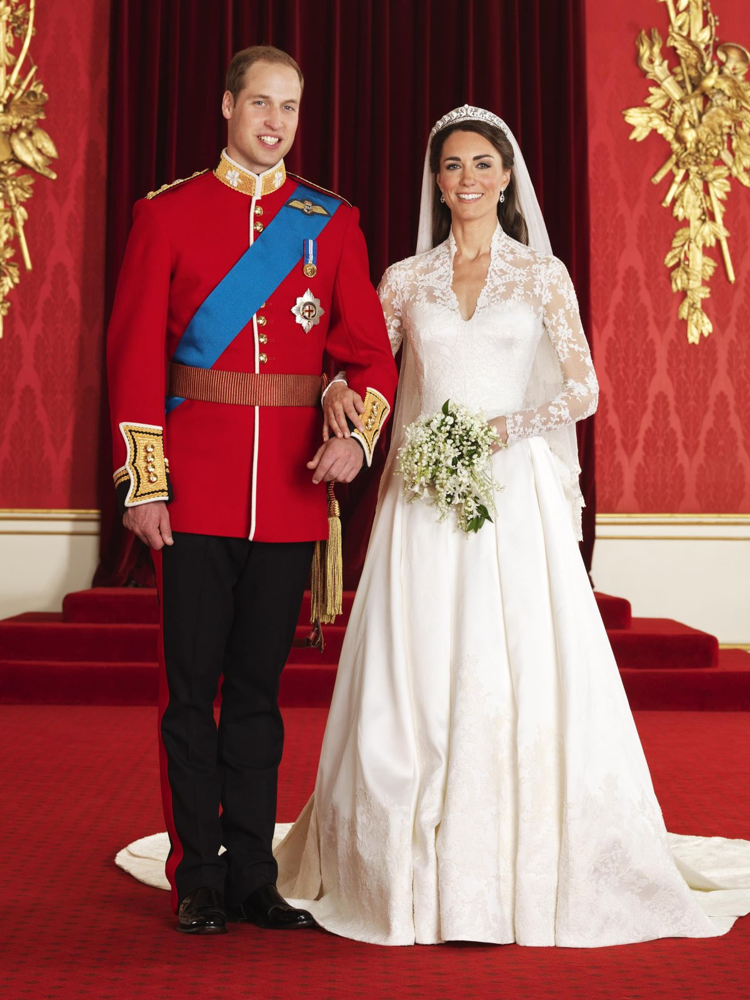

Git link:
https://git.bskyb.com/sky-components/sdc-interactive-hot-spots.git
×
sdc-interactive-hot-spots.previous
sdc-interactive-hot-spots.next
sdc-interactive-hot-spots.reset

×
sdc-interactive-hot-spots.previous
sdc-interactive-hot-spots.next
sdc-interactive-hot-spots.reset